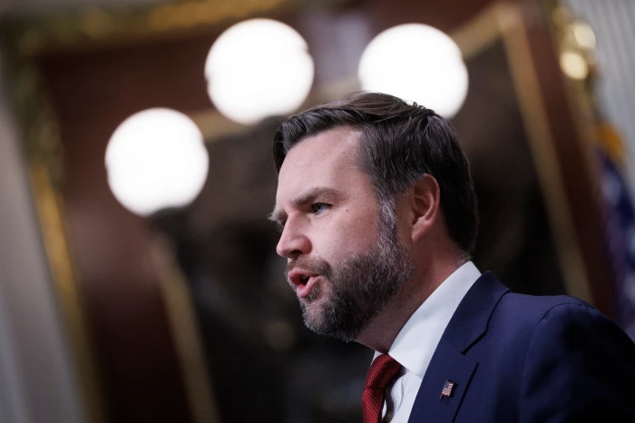

Monday, June 29, 2026
LIVE 2hrs ago
Vice President JD Vance announces Wednesday that the Trump administration will “temporarily halt” some Medicaid funding to the state of Minnesota over fraud concerns, as part of what he described as an aggressive crackdown on misuse of public funds.


WASHINGTON —As part of what he called a strong assault on misappropriation of public dollars, Vice President JD Vance stated Wednesday that the Trump administration would "temporarily halt" some Medicaid funding to the state of Minnesota due to fraud concerns.
Vance said the administration was acting "to ensure that the state of Minnesota takes its obligations seriously to be good stewards of the American people's tax money." Vance made the announcement alongside Dr. Mehmet Oz, the administrator for the Centers for Medicare and Medicaid Services.
Oz, who called fraudsters “self-serving scoundrels,” announced that the federal government will postpone giving Minnesota $259.5 million in Medicaid payments, which is the safety net for low-income Americans.
"The leadership of Minnesota and other states who do not take Medicaid preservation seriously are the problem, not the people of Minnesota," Oz stated.
The action on Wednesday is a component of a broader national campaign by the Trump administration to draw attention to fraud. This campaign follows major demonstrations and a massive immigration crackdown in Minneapolis, a Midwestern city, following suspicions of fraud involving day care businesses run by Somali citizens. In his State of the Union speech on Tuesday, President Donald Trump declared that Vance will lead a nationwide "war on fraud."
Colin McDonald was recently nominated by Trump to be the first assistant attorney general to lead a Justice Department unit tasked with combating fraud.
Oz claimed that as Tim Walz, the Democratic governor of Minnesota, was making the news in public, the administration was also informing him.
"We will provide them with the funds, but we will withhold them until they have proposed and implemented a thorough corrective action plan to address the issue," Oz stated.
He told Medicaid recipients and healthcare professionals who were worried to get in touch with Walz's office and gave Walz 60 days to reply.
In two social media posts, Walz, the 2024 running mate of former Vice President Kamala Harris, claimed that the administration's action was unrelated to fraud.
"This is a retaliatory campaign. Walz claimed that Trump is punishing blue states like Minnesota by using the entire federal government as a weapon. "Veterans, families with small children, people with disabilities, and working people throughout our state will suffer greatly as a result of these cuts."
Since taking office in 2019, Minnesota Attorney General Keith Ellison said in a statement that his team has successfully prosecuted more than 300 Medicaid fraud prosecutions. Additionally, he mentioned that earlier on Wednesday, he urged the Legislature to provide him with additional personnel and extra legal resources to fight Medicaid fraud.
Ellison stated, "We will see them in court if the federal government is unlawfully withholding money meant for the 1.2 million low-income Minnesotans on Medicaid. Courts have found time and time again that their pattern of cutting first and asking questions later is illegal."
According to Oz, the Centers for Medicare and Medicaid Services are also acting to combat Medicare fraud, which affects millions of senior citizens who depend on the health care system.
According to him, CMS would prevent new Medicare enrollments for providers of orthotics, prosthetics, durable medical equipment, and other products used to treat chronic illnesses or aid in the healing process after injuries for a period of six months.
Last year, the U.S. Department of Health and Human Services' Office of the Inspector General discovered that Medicare had inappropriately paid vendors close to $23 million for durable medical equipment between 2018 and 2024. However, it discovered that the majority of that occurred before to January 2020, when system modifications were put into place.
Oz also revealed a new crowdsourcing initiative that he said would help "crush fraud" by asking Americans for their advice and recommendations.
He declared, "We are all smarter than any one of us."
CMS stated in a news statement that accompanied the announcement that around $244 million in Medicaid claims that were unsupported or possibly fraudulent, as well as approximately $15 million in claims involving "individuals lacking a satisfactory immigration status," were among the funding that was being delayed in Minnesota.
Enrollment in the Medicaid program, which offers almost free coverage for health services, is prohibited for both illegal immigrants and certain legitimately present immigrants.
According to the press release, CMS could withhold up to $1 billion in federal funding from Minnesota over the course of the following year if the state doesn't meet its obligations. According to CMS spokesperson Catherine Howden, the agency will sample claims to determine whether they meet federal criteria and may ask for additional information regarding individual claims as part of its review of possible fraud cases.
CMS is postponing funds in a "very unusual step," according to Akeiisa Coleman, senior program officer for Medicaid at the Commonwealth Fund. According to her, insufficient funding may force the state to stop paying providers, which could have an impact on service.
Over the past few months, the administration has threatened to stop financing a number of programs for certain Democratic-run states due to fraud fears.
A judge stopped such efforts and mandated that funds for various social assistance programs be made to Minnesota and four other states: California, Colorado, Illinois, and New York. There was "reason to believe," according to the administration, that those states were giving benefits to citizens in violation of the law. Although the source of the information was not first disclosed, a government attorney informed the judge that it was mostly a response to press stories regarding potential fraud.
According to a different judge, she would not allow it to stop funding 22 states' administrative expenses because they have refused to provide information regarding food aid applicants and beneficiaries through the Supplemental Nutritional Assistance Program.
A number of fraud instances, including one involving a nonprofit organization called Feeding Our Future that was charged with embezzling pandemic funds intended for school lunches, served as a catalyst for the most recent action. The losses in the case, according to the prosecution, were $300 million.
Since then, Trump has made a number of derogatory remarks against the Somali diaspora in Minnesota and targeted them with immigration enforcement measures. Trump said "pirates" have "ransacked Minnesota" in his State of the Union speech on Tuesday.
Additionally, federal authorities have been called upon to help combat fraud in Minnesota.
Money wire firms that transmit money to Somalia are required to provide the Treasury with extra verification, according to an order issued by the U.S. Treasury Department in December.
In January, the Centers for Medicare and Medicaid Services informed Minnesota that it planned to suspend portions of payments for some high-risk Medicaid programs. The state filed an administrative appeal, claiming that if those cuts continued, they would total more than $2 billion a year.